Mô Phỏng Thí Nghiệm
Bài 8: Thấu Kính
Môn Khoa học tự nhiên; Lớp: 9 — Thời gian thực hiện: 2 tiết
1. Thí nghiệm tìm hiểu đường truyền của các tia sáng đặc biệt qua thấu kính.
1.1. Mục tiêu:
- Trình bày và mô tả được đường truyền của 3 tia sáng đặc biệt (tia tới đi qua quang tâm O, tia tới song song với trục chính, tia tới đi qua tiêu điểm chính F hoặc có đường kéo dài đi qua F') khi qua thấu kính hội tụ và thấu kính phân kì thông qua quan sát mô phỏng.
- Rút ra được quy luật hội tụ của chùm tia ló đối với thấu kính hội tụ và tính chất phân kì của chùm tia ló đối với thấu kính phân kì khi chùm tia tới song song với trục chính.
1.2. Dụng cụ, thiết bị và các bước tiến hành.
1.2.1. Dụng cụ, thiết bị và giải thích về công cụ hỗ trợ.
- Thiết bị phần cứng: Máy tính để bàn, máy tính xách tay hoặc điện thoại thông minh có kết nối Internet.
- Phần mềm mô phỏng: Phần mềm mô phỏng Thấu kính trực tuyến (Nhóm Natural - KHTN 9, Trường ĐHSP TP.HCM).
★ Phân tích điểm khó của nội dung kiến thức trong bài học:
- Trong thực tế phòng thí nghiệm phổ thông, đường truyền của các tia sáng trong không khí rất mờ nhạt, tán xạ yếu và cực kì khó quan sát nếu phòng học không đủ tối. Việc bố trí nguồn sáng, căn chỉnh góc nghiêng và lắp đặt khe hẹp để tạo chùm tia laser/halogen phẳng mất rất nhiều thời gian tiết học.
- Đặc biệt đối với thấu kính phân kì, khái niệm "tiêu điểm ảo F" và "đường kéo dài của tia ló" là một rào cản nhận thức rất lớn đối với học sinh lớp 9. Trong thí nghiệm thật, mắt học sinh không thể nhìn thấy đường kéo dài nét đứt cắt nhau tại tiêu điểm ở phía trước thấu kính, dẫn đến việc các em phải học vẹt định nghĩa trừu tượng mà không hiểu được bản chất hiện tượng vật lí.
★ Vai trò và lý do lựa chọn công cụ mô phỏng tương tác (Khắc phục hạn chế của video/thí nghiệm thường):
- Mô phỏng tương tác không đơn thuần chỉ để minh họa tĩnh hay thay thế bằng một đoạn video xem thụ động: Học sinh được trực tiếp cầm nắm, kéo rê nguồn sáng S đến bất kì toạ độ nào trong không gian, lập tức nhận thấy đường truyền tia sáng và tia ló biến đổi tương ứng theo thời gian thực (real-time visual feedback).
- Trực quan hóa "cái vô hình": Công cụ mô phỏng cho phép hiển thị các đường kéo dài tia sáng bằng nét đứt sắc nét, giúp học sinh tận mắt chứng kiến giao điểm ảo của chùm tia phân kì tại tiêu điểm F, giải quyết triệt để điểm nghẽn nhận thức của bài học.
★ Giải thích chi tiết các công cụ hỗ trợ trên giao diện mô phỏng thí nghiệm 1:
- Hiệu ứng âm thanh đa giác quan (Web Audio API): Tích hợp phản hồi âm thanh chuẩn mực khi bật/tắt tia sáng, âm thanh chuyển động của tia sáng và âm thanh chúc mừng khi hoàn thành, tạo môi trường học tập sống động, kích thích sự tập trung và hứng thú của học sinh.
- Chế độ hiển thị Sáng / Tối (Light / Dark mode): Nút chuyển đổi linh hoạt chế độ sáng (phù hợp khi giáo viên trình chiếu trên máy chiếu lớp học) và chế độ tối quang học (tạo cảm giác như đang ở trong phòng thí nghiệm quang học chuyên nghiệp, chống mỏi mắt khi học sinh tự học trên điện thoại cá nhân).
- Nút "▶ Chiếu tia sáng" (Play Animation): Tạo hoạt họa chùm photon chuyển động từ nguồn phát tới thấu kính rồi mới khúc xạ thành tia ló. Công cụ này giúp học sinh nhận thức sâu sắc quan hệ nhân quả vật lí: có tia tới đến thấu kính trước, sau đó mới sinh ra tia ló sau thấu kính.
- Nút "Hiện kết luận" (Đối chiếu sư phạm): Ban đầu kết luận được ẩn đi để học sinh tự thảo luận và rút ra quy tắc; chỉ khi học sinh đã nêu ý kiến thì giáo viên mới mở nút này để cả lớp cùng đối chiếu, khắc phục lỗi tiếp nhận thụ động.
- Áp dụng chu trình POE (Dự đoán - Quan sát - Giải thích): Nhằm tránh lỗi "Hỏi sau khi đã thấy kết quả", trước khi bật từng tia sáng trên mô phỏng, giáo viên luôn yêu cầu học sinh làm bước Dự đoán (P) xem tia ló sẽ đi đâu, sau đó mới bấm chọn tia trên mô phỏng để Quan sát (O) và Giải thích (E).
1.2.2. Các bước tiến hành.
Bước 1: Truy cập trang web mô phỏng và mở tab "TN1: Tia sáng"
- Đường link truy cập: https://minhlfc.github.io/nhom5-natural-thau-kinh/#tn1
- Sau khi truy cập vào đường link, nhấp chọn mục "TN1: Tia sáng" trên thanh menu ngang để hiển thị giao diện phòng thí nghiệm ảo chuẩn bị thực hiện mô phỏng.
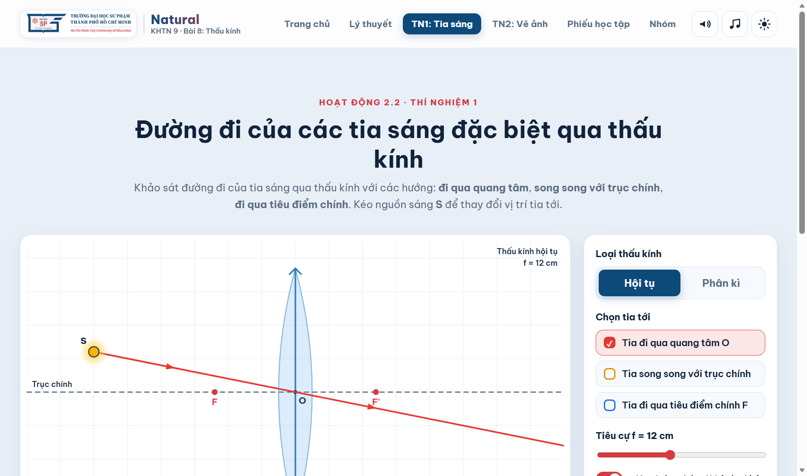
Hình 1.1: Toàn cảnh giao diện thí nghiệm đường truyền các tia sáng đặc biệt qua thấu kính
Cần nắm rõ các phần trong giao diện mô phỏng thí nghiệm:
- Khu vực sân khấu quang học: Thể hiện trục chính thấu kính, quang tâm O, các tiêu điểm F và F', nguồn sáng điểm S và đường truyền tia sáng màu sắc trực quan.
- Khu vực lựa chọn loại thấu kính: Có thể chuyển đổi linh hoạt giữa "Hội tụ" và "Phân kì".
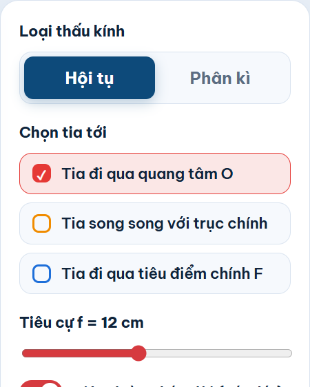
Hình 1.2: Bảng điều khiển chọn loại thấu kính, bật/tắt tia sáng và điều chỉnh tiêu cự f
- Khu vực chọn tia tới đặc biệt: Cho phép bật/tắt độc lập hoặc đồng thời 3 tia sáng (Tia qua quang tâm O - màu cam, Tia song song trục chính - màu lam, Tia qua tiêu điểm - màu lục).
- Thanh chỉnh tiêu cự f: Thay đổi tiêu cự từ 6 cm đến 20 cm để khảo sát sự dịch chuyển của các tiêu điểm.
- Các nút thao tác nhanh: Nút "▶ Chiếu tia sáng" (chạy hoạt họa tia sáng), "↺ Đặt lại" (khôi phục trạng thái ban đầu), "Hiện kết luận" (đối chiếu quy tắc).
Bước 2: Thực hiện quan sát đường truyền của các tia sáng đặc biệt qua Thấu kính hội tụ.
Tại bảng điều khiển, chọn loại thấu kính là "Hội tụ". Đặt nguồn sáng S phía trước thấu kính và lần lượt quan sát từng tia sáng:
- 1. Tia tới đi qua quang tâm O: Tích chọn duy nhất ô "Tia đi qua quang tâm O". Quan sát thấy tia ló tiếp tục truyền thẳng theo phương của tia tới mà không hề bị đổi hướng.
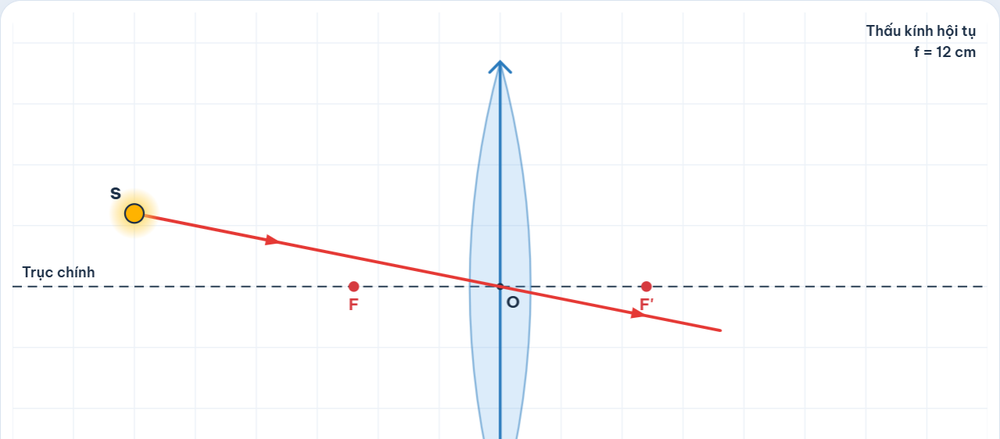
Hình 1.3: Tia tới đi qua quang tâm O của thấu kính hội tụ truyền thẳng
- 2. Tia tới song song với trục chính: Tích chọn ô "Tia song song với trục chính". Quan sát thấy tia ló bị khúc xạ gập xuống và đi qua tiêu điểm chính F' ở phía sau thấu kính.
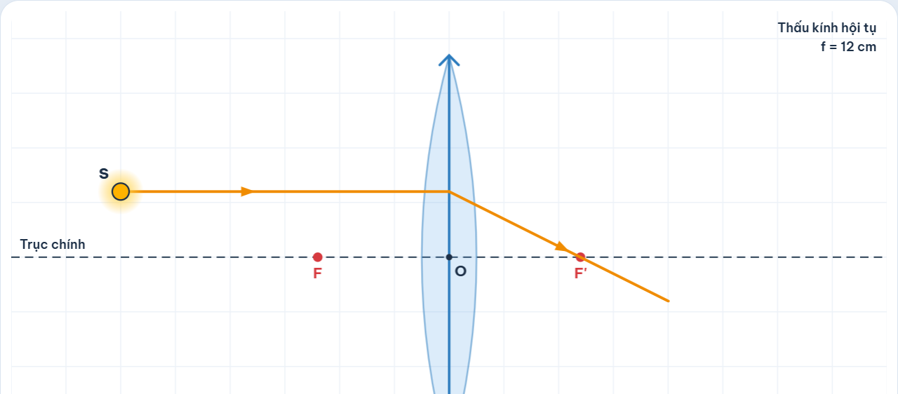
Hình 1.4: Tia tới song song với trục chính cho tia ló đi qua tiêu điểm chính F'
- 3. Tia tới đi qua tiêu điểm chính F: Tích chọn ô "Tia đi qua tiêu điểm chính F". Quan sát thấy tia ló sau khi qua thấu kính trở nên song song với trục chính.
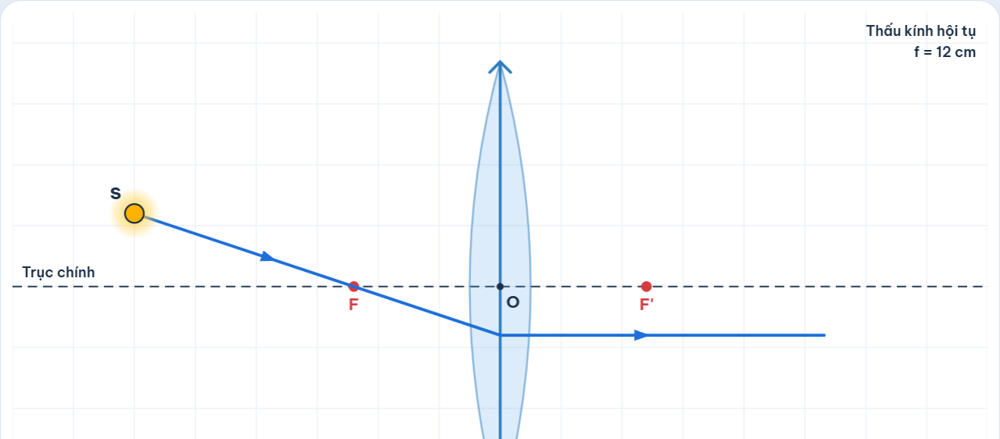
Hình 1.5: Tia tới đi qua tiêu điểm vật chính F cho tia ló song song trục chính
- 4. Chiếu đồng thời cả 3 tia sáng đặc biệt: Tích chọn cả 3 tia sáng, kéo thay đổi vị trí nguồn sáng S hoặc thay đổi tiêu cự f. Quan sát thấy cả 3 tia ló đều cùng cắt nhau tại điểm ảnh thật S' của điểm sáng S.
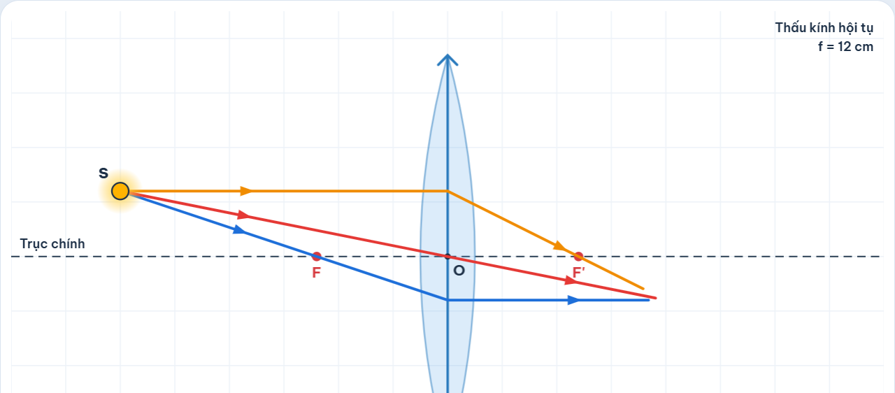
Hình 1.6: Cả 3 tia ló của thấu kính hội tụ cùng hội tụ tại điểm ảnh S'
Bước 3: Thực hiện quan sát đường truyền của các tia sáng đặc biệt qua Thấu kính phân kì.
Tại thanh điều khiển, chuyển sang chọn loại thấu kính là "Phân kì". Lần lượt khảo sát đường truyền của 3 tia sáng đặc biệt:
- 1. Tia tới đi qua quang tâm O: Tích chọn ô "Tia đi qua quang tâm O". Tia ló tiếp tục truyền thẳng, tương tự như thấu kính hội tụ.
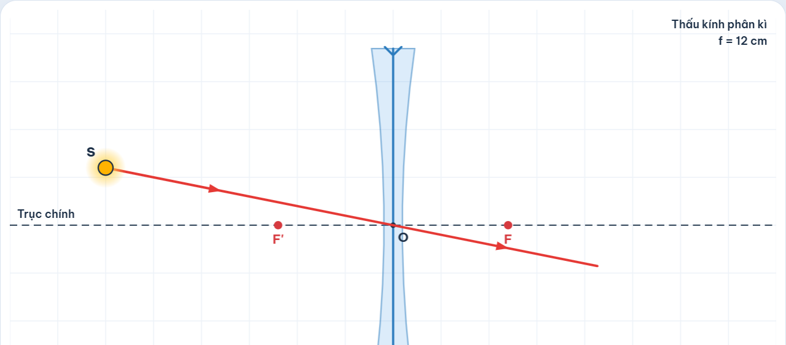
Hình 1.7: Tia tới đi qua quang tâm O của thấu kính phân kì truyền thẳng
- 2. Tia tới song song với trục chính: Tích chọn ô "Tia song song với trục chính". Quan sát thấy tia ló bị loe rộng ra (phân kì), đường kéo dài của tia ló (nét đứt) đi qua tiêu điểm chính F ở phía trước thấu kính.
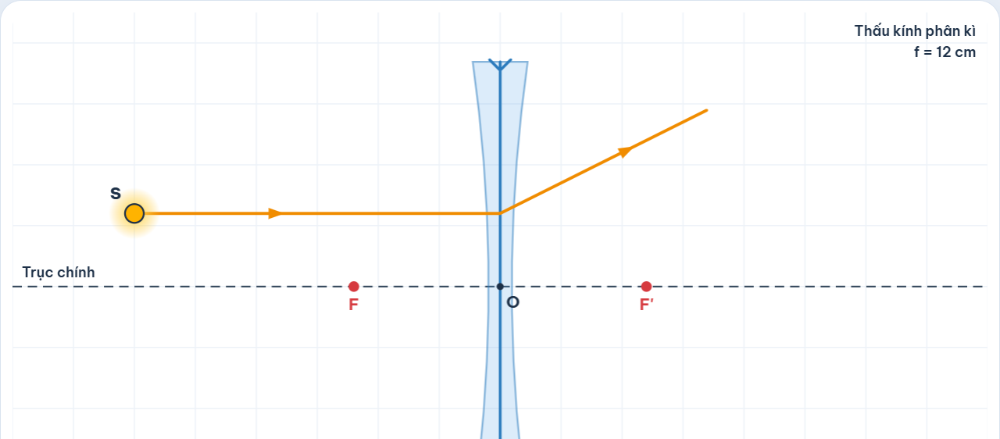
Hình 1.8: Tia tới song song trục chính cho tia ló có đường kéo dài đi qua tiêu điểm F
- 3. Tia tới có đường kéo dài hướng tới tiêu điểm chính F': Tích chọn ô "Tia có đường kéo dài qua tiêu điểm F'". Tia ló sau khi qua thấu kính trở nên song song với trục chính.
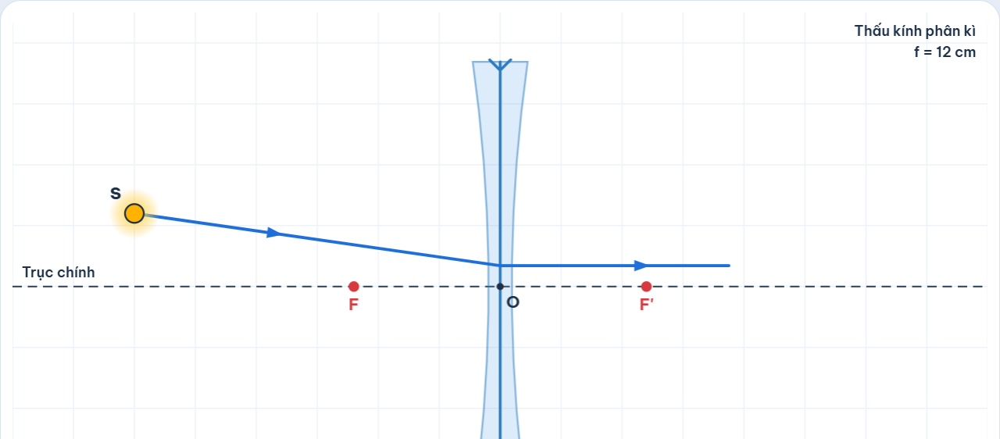
Hình 1.9: Tia tới hướng tới tiêu điểm F' ở sau thấu kính cho tia ló song song trục chính
- 4. Chiếu đồng thời cả 3 tia sáng đặc biệt qua thấu kính phân kì: Quan sát thấy chùm tia ló loe rộng ra, các đường kéo dài của chúng cắt nhau tại điểm ảnh ảo S' ở phía trước thấu kính.
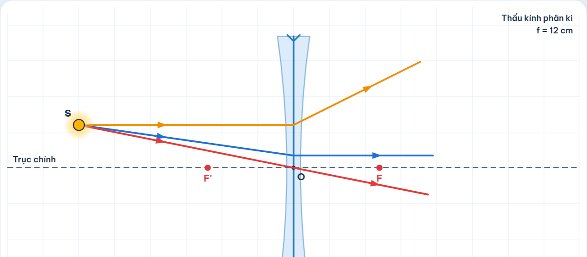
Hình 1.10: Chùm tia ló phân kì có các đường kéo dài cắt nhau tại ảnh ảo S'
2. Thí nghiệm mô phỏng về sự tạo ảnh của vật qua thấu kính.
2.1. Mục tiêu.
- Thực hiện thí nghiệm mô phỏng quan sát quá trình dựng ảnh của một vật sáng AB (đoạn thẳng vuông góc với trục chính, A nằm trên trục chính) qua thấu kính hội tụ và thấu kính phân kì.
- Khảo sát, xác định và ghi nhận được đặc điểm của ảnh A'B' (ảnh thật hay ảnh ảo, cùng chiều hay ngược chiều với vật, lớn hơn hay nhỏ hơn vật) ứng với các khoảng cách khác nhau từ vật đến thấu kính (d > 2f, d = 2f, f < d < 2f, d = f, d < f).
2.2. Dụng cụ, thiết bị và các bước tiến hành.
2.2.1. Dụng cụ, thiết bị và giải thích về công cụ hỗ trợ.
- Thiết bị phần cứng: Máy tính để bàn, máy tính xách tay hoặc điện thoại có kết nối Internet.
- Phần mềm mô phỏng: Phần mềm mô phỏng Thấu kính trực tuyến (Nhóm Natural - KHTN 9, Trường ĐHSP TP.HCM).
★ Phân tích điểm khó của nội dung kiến thức trong bài học:
- Khảo sát sự tạo ảnh của thấu kính (đặc biệt là mối liên hệ phụ thuộc giữa vị trí vật d và tính chất ảnh d', h') đòi hỏi sự thay đổi liên tục của vật trên trục chính. Trong thí nghiệm thật, việc dịch chuyển nến/đèn, dịch chuyển thấu kính và màn hứng trên giá quang học rất lề mề, dễ làm lệch trục quang học, ảnh trên màn bị mờ hoặc nhòe khiến học sinh khó xác định ranh giới ảnh rõ nét nhất.
- Vấn đề nan giải về ẢNH ẢO: Đối với thấu kính phân kì và trường hợp d < f của thấu kính hội tụ, ảnh tạo bởi thấu kính là ảnh ảo. Ảnh ảo hoàn toàn không hứng được trên màn chắn. Trong giờ học thực tế, học sinh nhìn qua thấu kính chỉ thấy ảnh lơ lửng, không thể đo được khoảng cách d' hay chiều cao h', không xác định được ảnh ảo nằm trước hay sau thấu kính. Đây là một điểm nghẽn nhận thức lớn nhất của học sinh THCS.
★ Vai trò và lý do lựa chọn công cụ mô phỏng tương tác (Khắc phục hạn chế của video/thí nghiệm thường):
- Vượt trội hoàn toàn so với video thụ động: Thay vì ngồi xem giáo viên thao tác mẫu, từng học sinh được tự do kéo thả đỉnh B của vật sáng AB sang trái/phải, lên/xuống liên tục; ảnh A'B' di chuyển và biến đổi tương ứng theo thời gian thực. Mối quan hệ giữa vật và ảnh trở thành một quy luật liên tục, trực quan thay vì các trường hợp rời rạc học vẹt.
- Giải quyết trọn vẹn khái niệm ảnh ảo: Mô phỏng hiển thị đồng thời cả vật thật, ảnh thật (nét liền màu cam), ảnh ảo (nét đứt màu cam) cùng với các đường kéo dài của tia ló, giúp học sinh thấy rõ bản chất tạo ảnh ảo là do đường kéo dài của chùm tia ló cắt nhau.
★ Giải thích chi tiết các công cụ hỗ trợ trên giao diện mô phỏng thí nghiệm 2:
- Thước đo quang học và hệ toạ độ tự động: Trục chính được chia vạch cm rõ ràng, tự động đánh dấu quang tâm O, các tiêu điểm F, F', các vị trí đặc biệt 2F, 2F' giúp học sinh định lượng chính xác khoảng cách.
- Các nút chọn nhanh vị trí chuẩn trong SGK (d > 2f, d = 2f, f < d < 2f, d = f, d < f): Giúp giáo viên và học sinh chuyển đổi ngay lập tức đến các vị trí trọng tâm của chương trình để khảo sát mà không mất thời gian căn chỉnh thủ công.
- Bảng đo đạc & tính chất ảnh tức thời (Readout Card): Đóng vai trò như một "trợ lí số thông minh", tự động tính toán khoảng cách ảnh d', chiều cao ảnh h', độ phóng đại k, đồng thời hiển thị huy hiệu phân loại ảnh (Ảnh thật / Ảnh ảo, Cùng chiều / Ngược chiều, Lớn hơn / Nhỏ hơn / Bằng vật) với màu sắc nổi bật, giúp học sinh tức thời đối chiếu và củng cố kết quả vẽ ảnh.
- Áp dụng chu trình POE (Dự đoán - Quan sát - Giải thích): Trước khi nhấp nút vị trí nhanh hoặc kéo vật, giáo viên yêu cầu học sinh ghi nhận dự đoán về đặc điểm ảnh (thật/ảo, chiều, độ lớn), sau đó mới quan sát ảnh trên mô phỏng và giải thích nguyên nhân.
2.2.2. Các bước tiến hành.
Bước 1: Truy cập trang web mô phỏng và mở tab "TN2: Vẽ ảnh"
- Đường link truy cập: https://minhlfc.github.io/nhom5-natural-thau-kinh/#tn2
- Nhấp chọn mục "TN2: Vẽ ảnh" trên thanh menu để mở không gian thí nghiệm tạo ảnh.
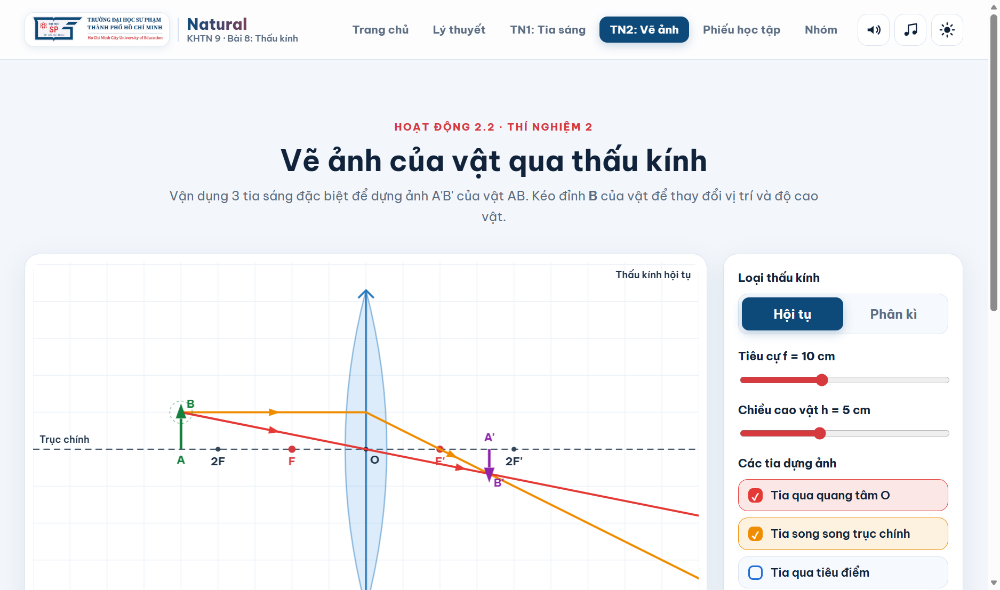
Hình 2.1: Toàn cảnh giao diện thí nghiệm vẽ ảnh của vật qua thấu kính
Cần nắm rõ các phần trong giao diện mô phỏng thí nghiệm:
- Vùng quang học tương tác: Vật sáng AB (mũi tên xanh), ảnh A'B' (mũi tên cam, vẽ nét đứt nếu là ảnh ảo), quang tâm O, tiêu điểm F, F', các tia sáng dựng ảnh xuất phát từ đỉnh B. Học sinh có thể dùng chuột kéo thả trực tiếp đỉnh B của vật sang trái/phải hoặc lên/xuống.
- Khu vực bảng điều khiển thông số:
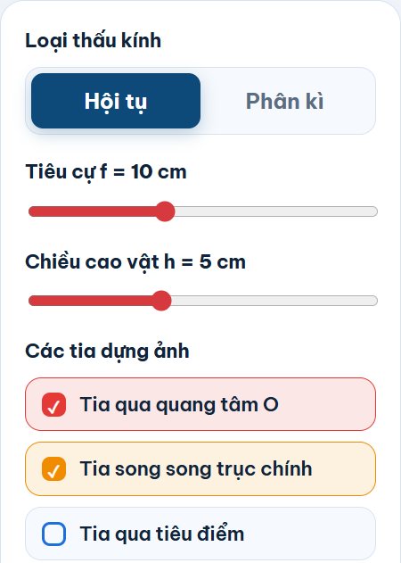
Hình 2.2: Bảng điều khiển thấu kính, thanh trượt d, f, h và các nút chọn vị trí nhanh
- Chọn loại thấu kính: "Hội tụ" hoặc "Phân kì".
- Thanh trượt tiêu cự f (5 - 18 cm) và chiều cao vật h (2 - 10 cm).
- Các nút chọn vị trí nhanh của vật:
d > 2f, d = 2f, f < d < 2f, d = f, d < f giúp quan sát chuẩn xác từng trường hợp trong SGK.
- Bảng đo đạc & tính chất ảnh tức thời: Tự động cập nhật khoảng cách ảnh d', chiều cao ảnh h' và hiển thị rõ huy hiệu Ảnh thật/Ảnh ảo, Cùng chiều/Ngược chiều, Độ lớn so với vật.
Bước 2: Khảo sát sự tạo ảnh qua Thấu kính hội tụ khi vật ở các khoảng cách khác nhau.
Chọn loại thấu kính là "Hội tụ", cố định tiêu cự f = 10 cm, chiều cao vật h = 5 cm. Tiến hành khảo sát lần lượt 4 trường hợp vị trí của vật:
- a) Trường hợp 1: Vật đặt rất xa / ngoài khoảng 2f (d > 2f, chọn d = 25 cm):
Nhấp nút vị trí nhanh "d > 2f". Hai tia ló xuất phát từ B cắt nhau tại điểm B' ở phía sau thấu kính. Hạ vuông góc xuống trục chính được ảnh A'B'.
Kết quả ghi nhận: Ảnh A'B' là ảnh thật, ngược chiều với vật và nhỏ hơn vật (d' = 16,7 cm; h' = 3,3 cm).
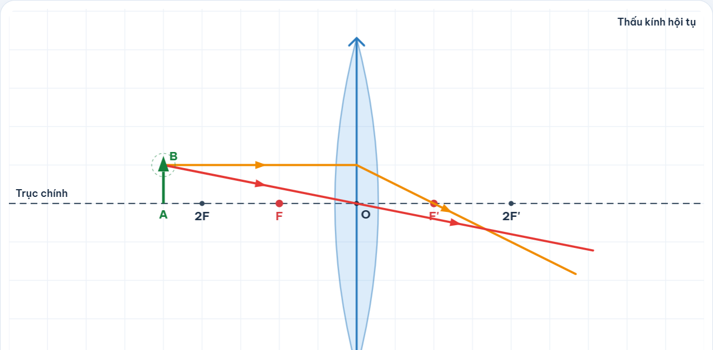
2f">
Hình 2.3: Vật đặt ngoài khoảng 2f (d > 2f) qua TKHT cho ảnh thật, ngược chiều, nhỏ hơn vật
- b) Trường hợp 2: Vật đặt cách thấu kính đúng bằng 2 lần tiêu cự (d = 2f = 20 cm):
Nhấp nút vị trí nhanh "d = 2f". Quan sát vị trí ảnh A'B' trên thước đo.
Kết quả ghi nhận: Ảnh A'B' là ảnh thật, ngược chiều với vật và có độ cao đúng bằng vật (d' = 20 cm = 2f; h' = 5 cm = h).
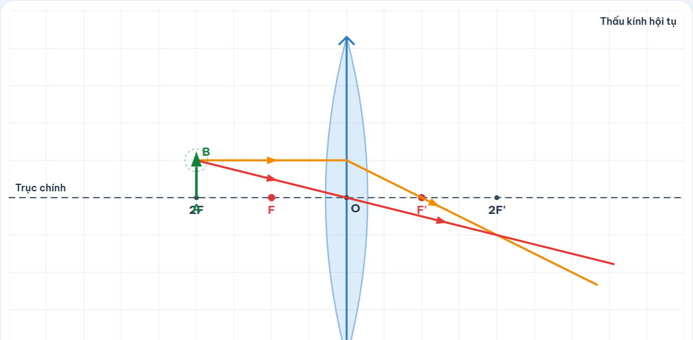
Hình 2.4: Vật đặt tại vị trí d = 2f qua TKHT cho ảnh thật, ngược chiều, bằng vật
- c) Trường hợp 3: Vật đặt trong khoảng giữa tiêu cự và 2 lần tiêu cự (f < d < 2f, chọn d = 15 cm):
Nhấp nút vị trí nhanh "f < d < 2f". Quan sát ảnh A'B' dịch chuyển ra xa thấu kính.
Kết quả ghi nhận: Ảnh A'B' là ảnh thật, ngược chiều với vật và lớn hơn vật (d' = 30 cm; h' = 10 cm).
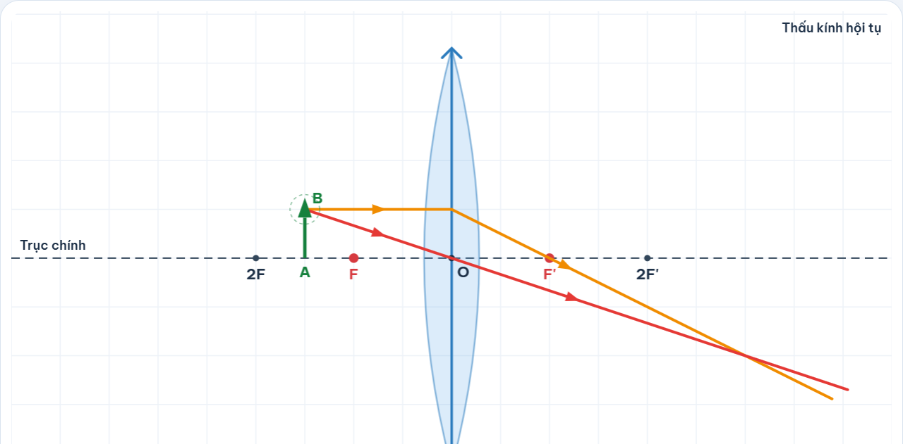
Hình 2.5: Vật đặt trong khoảng f < d < 2f qua TKHT cho ảnh thật, ngược chiều, lớn hơn vật
- d) Trường hợp 4: Vật đặt trong khoảng tiêu cự (d < f, chọn d = 5 cm):
Nhấp nút vị trí nhanh "d < f". Chùm tia ló loe rộng ra không thể cắt nhau ở phía sau thấu kính. Hai đường kéo dài nét đứt cắt nhau tại B' ở phía trước thấu kính.
Kết quả ghi nhận: Ảnh A'B' là ảnh ảo (nét đứt), cùng chiều với vật và lớn hơn vật (d' = -10 cm; h' = 10 cm). Đây chính là nguyên lý của kính lúp.
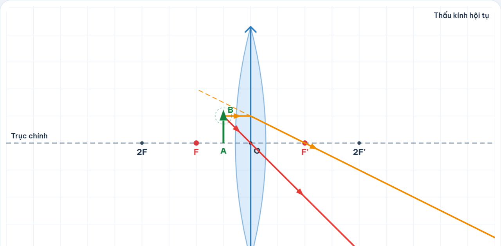
Hình 2.6: Vật đặt trong khoảng tiêu cự (d < f) qua TKHT cho ảnh ảo, cùng chiều, lớn hơn vật
Bước 3: Khảo sát sự tạo ảnh của vật qua Thấu kính phân kì.
Tại thanh điều khiển, chuyển sang chọn loại thấu kính là "Phân kì". Cố định tiêu cự f = 10 cm, thay đổi vị trí của vật sáng AB ở các khoảng cách khác nhau (d = 20 cm, d = 25 cm, d = 10 cm...):
- Thực hiện kéo rê vật AB dọc theo trục chính để quan sát chùm tia ló và vị trí ảnh A'B'.
- Kết quả ghi nhận: Với mọi vị trí của vật sáng đặt trước thấu kính phân kì, ảnh A'B' luôn luôn là ảnh ảo, cùng chiều với vật, nhỏ hơn vật và luôn nằm trong khoảng tiêu cự của thấu kính (nằm giữa quang tâm O và tiêu điểm F).
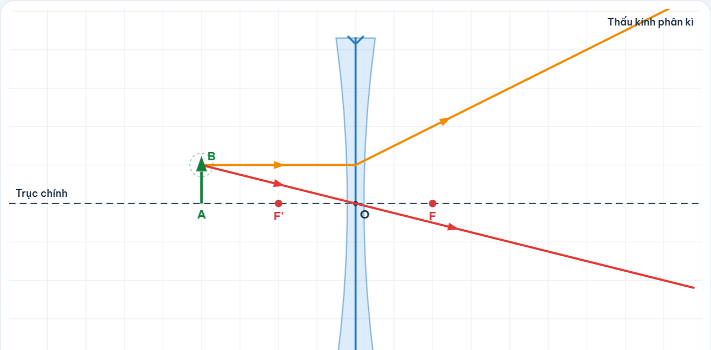
Hình 2.7: Thấu kính phân kì luôn cho ảnh ảo, cùng chiều, nhỏ hơn vật và nằm trong khoảng tiêu cự
2.3. Bảng tổng kết đặc điểm ảnh của vật qua thấu kính:
| Loại thấu kính |
Vị trí của vật (d) |
Ảnh thật / ảo |
Chiều của ảnh |
Độ lớn của ảnh |
| Thấu kính hội tụ |
d > 2f |
Ảnh thật |
Ngược chiều |
Nhỏ hơn vật |
| Thấu kính hội tụ |
d = 2f |
Ảnh thật |
Ngược chiều |
Bằng vật |
| Thấu kính hội tụ |
f < d < 2f |
Ảnh thật |
Ngược chiều |
Lớn hơn vật |
| Thấu kính hội tụ |
d < f |
Ảnh ảo |
Cùng chiều |
Lớn hơn vật |
| Thấu kính phân kì |
Mọi vị trí (d > 0) |
Ảnh ảo |
Cùng chiều |
Nhỏ hơn vật |